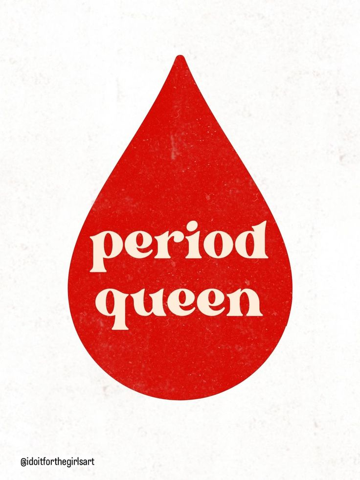

For cramps
- Heat (heating pad or warm shower)
- Gentle stretching or a short walk
- Rest + slow breathing
- Talk to an adult about pain relief options if you need them
Real-life tips to help you feel more prepared, more comfortable, and less stressed.
Your period is a normal part of how your body grows and changes. It can still feel weird, annoying, or confusing at first—and that’s okay. These tips are here to help you feel supported while you figure out what works best for you.

Tiny habits that can make a big difference.
Keep a pad/tampon, a spare pair of underwear, and a small zip bag in your backpack—future you will be so grateful.
A calendar or app can help you feel less surprised. Even a quick note like “day 1” is enough.
Soft pants, cozy layers, or anything that makes you feel like yourself is a win. Comfort is the vibe.
A heating pad, warm water bottle, or warm shower can help your body relax when cramps show up.
Hydration can help with headaches and tiredness. If water is boring, add a lemon slice or use a cute bottle.
Your body is doing a lot. Small breaks count—sit down, stretch, breathe, and give yourself permission to slow down.
A trusted adult, school nurse, or older sibling can help with supplies, questions, or just reassurance.
Your flow, cramps, and mood might not match your friends’. That doesn’t mean anything is “wrong.”
A quick “menu” of ideas—mix and match what feels good for you.
This isn’t meant to scare you—just a calm checklist. If something feels “too much,” it’s okay to speak up.
A trusted adult, school nurse, or doctor can help you feel safe and supported.